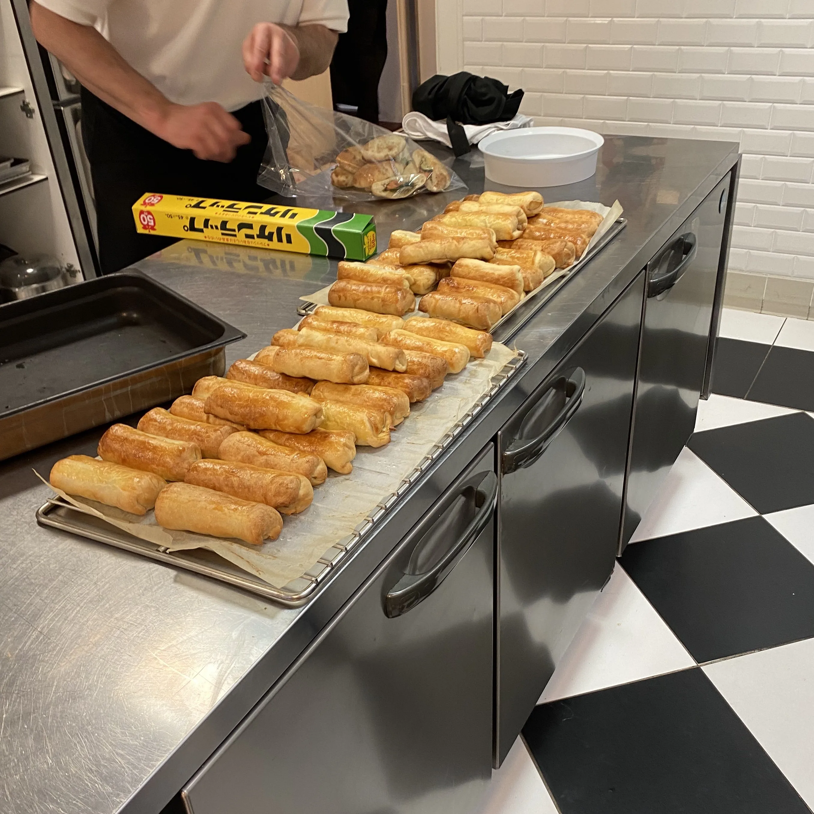

nl
en
YA'GEL SCHOONDERBEEK
KEUKEN ERVARINGEN
op allerlei plekken heb ik van alles geleerd als chef\n\nop dit moment vooral de wegen van zuurdesem bij bakkerij mater

PRIVATE CATERING
sinds 2025 ben ik in te huren als zzp'er voor catering bij events \n\n mijn nadruk ligt op het samen ervaren van simpel eten dat zoekt naar de kern van smaak
DE KLOOF
elke donderdag een warme lunch voor daklozen